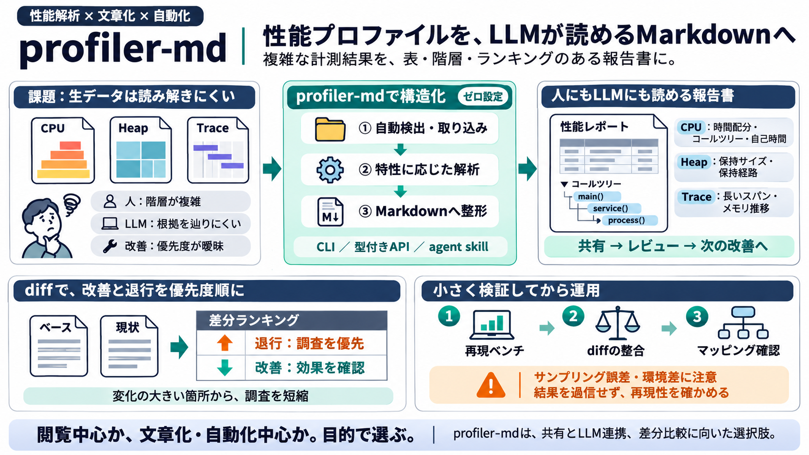

GitHub - platformatic/pprof-to-md: getting pprof format ingestable by LLMs · GitHub
## Repository files navigation # pprof-to-md Convert pprof profiling data into Markdown format for LLM-assisted perfor…

性能を読む、LLMへ渡す
CPU/ヒープ/トレースなどの性能プロファイルを、人間が読みやすく、LLMが扱いやすいMarkdownへ自動変換します。
（性能プロファイル性能の可視化→解析→共有→改善の文章化）
生データは“読まれない”
性能プロファイルは強力ですが、形が複雑で、共有コストが高く、さらにLLMにそのまま渡しづらいことがあります。
結果として「ボトルネック特定→改善」の回転が遅れます。
“計測結果”を“報告書”へ
profiler-mdは、性能データを“表・階層・ランキングを持つ報告書”のMarkdownにまとめます。
（人にもLLMにも、探す順番が見える状態へ）
入口は広く、出力は一貫
profiler-mdは多形式・多言語に対応し、zero config（ゼロ設定）で形式を自動検出して解析します。
その結果を“読みやすい塊”に構造化して出力します。
| 工程 | 出力イメージ |
|---|---|
| i 取り込み | CPUプロファイル / heap snapshot / 各種トレース（JFR等を想定） |
| ii 解析 | カテゴリ別配分、コールツリー、自己時間上位、保持（dominator）等 |
| iii Markdown化 | 表・階層・ランキングで、人間とLLMが辿れる形に整形 |
CPU：熱い経路が見える
CPUプロファイルでは、カテゴリ別の時間配分、コールツリー（ホットな呼び出し経路）、self time（自己時間）の上位関数などを表や階層で提示します。
（何が時間を食っているかを最短距離で掴む）
Heap：滞留の“支配”が要点
ヒープスナップショットでは、自己/支配（dominator）に基づく保持サイズ、保持経路、最大のコンストラクタや文字列などへ拡張されます。
（メモリ滞留の根っこに近づく）
Trace：長い出来事を文章化
トレースでは属性付きの長いスパン、インスタンス、ヒープサイズ推移などに拡張されます。
（出来事の流れを追える形にする）
diffで“成果/退行”が見える
diff機能は、ベースと現状の2つのプロファイル（例：CPU/heap/trace）を比較し、改善や退行をランキング形式で把握できます。
（どこが悪化し、何が効いたかを優先度つきで）
導入の型：小さく検証
精度や限界はREADMEだけでは完全に判断できないため、(1) 小さな再現ベンチ、(2) diffで退行の整合、(3) マッピング（例：ソースマップ等）の確認から段階的に進めるのが安全です。
（“正しいように見える”を先に潰す）
“優劣”より“用途”で選ぶ
Web検索結果では、Speedscopeはブラウザで対話的に閲覧するビューアで、インポートは多様ですが、入力からはprofiler-mdとの直接比較の結論は確定しません。
profiler-mdは「LLM/共有向けMarkdown化」と「diff」を軸にした方向性です。
| 軸 | profiler-md | Speedscope（検索要約） |
|---|---|---|
| 主目的 | プロファイル解析結果をLLM向けMarkdownへ | ブラウザで対話的に閲覧 |
| 連携 | diff / CLI / 型付きAPI / agent skill | インブラウザ完結（提示情報ベース） |
| 比較 | 直接の“優劣”根拠は入力から確定できず | 直接比較の決定打は不明 |
強みと注意点（要点だけ）
profiler-mdは、構造化されたテキストで共有・レビュー・自動分析を促し、diffとエージェント連携まで含めて“調査→要約→次アクション”を半自動化しやすい一方、サンプリング誤差や環境差で誤差が出る可能性があります。
（過信せず再現性と整合性を確認）
参照：入力に基づく要約
本デッキは、ユーザー提示のREADME要約・FAQ要約・自見（My opinion）・Web検索要約・過去履歴（なし）に基づき構成しています。
入力内で具体URLは提示されていないため、参照元の特定は行いません。
## Repository files navigation # pprof-to-md Convert pprof profiling data into Markdown format for LLM-assisted perfor…
Contributions to add support for additional formats are welcome! See issues with the "import source" tag. # Usage Visi…
| ツール | 形態 | ツリー | オフライン | ライブリロード | 検索 | Mermaid | テーマ・見た目 | ⭐ | --- --- --- --- | grip | Python CLI (ブラウザ) | △ | …
LiteLLMLiteLLM/ MODELS Docs ↗ ··· # AI model comparisons As of November 16, 2026, 146 side-by-side comparisons of AI …
| | | [...] stars 1 stars 2 stars 3 ## Company Information ## Email Format ## Management ## Technology Stack ## …